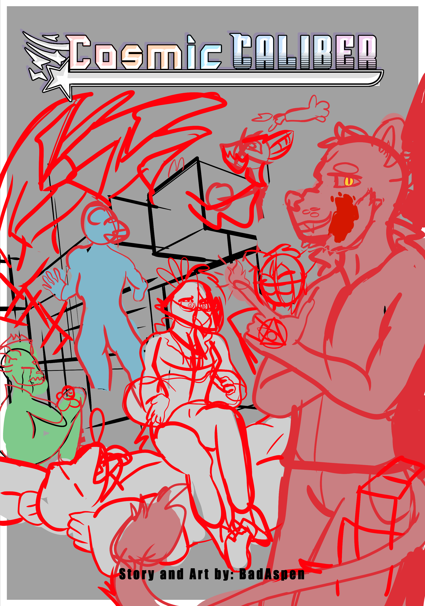

Note Cosmic Caliber is currently under construction!
This is a webcomic made by BadAspen. If you are seeing this text you are early
Check out my socials to keep up to date!!
Cosmic Caliber is a webcomic about a crew of magic-wielding space pirates
that fights an authoritarian galactic corporation
Follow Kade and his crew as they explore planets and discover new powers.
Cosmic Caliber is intended for a mature audience. Following suggestive themes and violence and gore.

Click here to go to the first page of the sample comic to see how it looks out-of-the-box.
You can also click here to go to the latest page, which will always point to the most recently published comic.